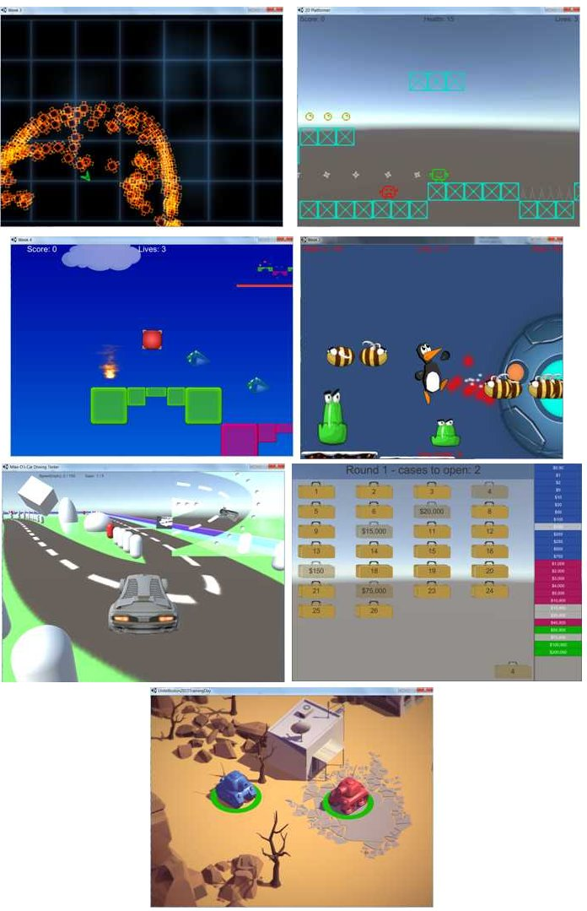
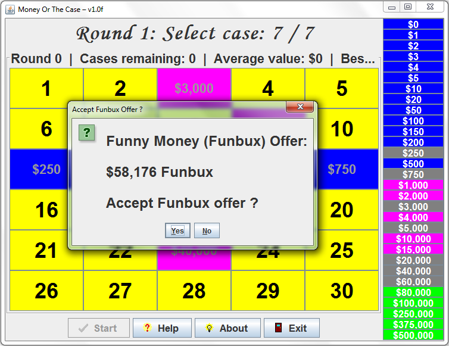
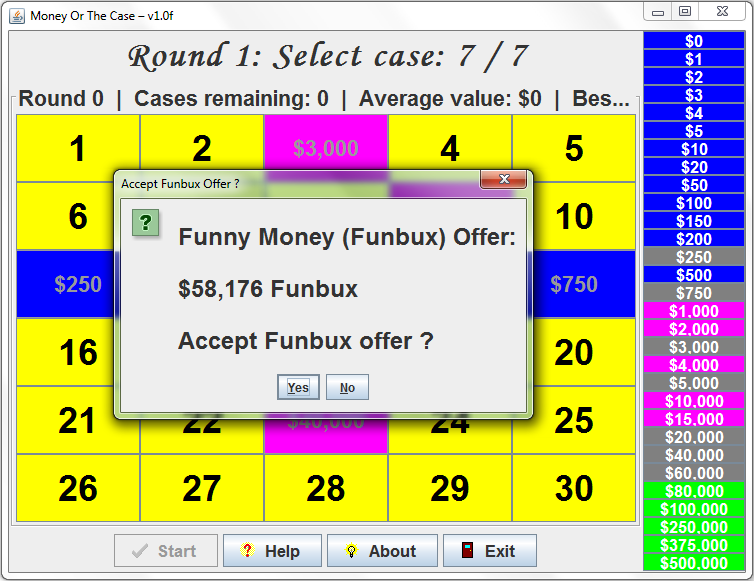

Moose's Software Valley has now been live for 23 years.
That's an incredible amount of time on the internet.
I can only think of a handful of web sites who have been on-line longer than me.
Let's see ... there's Google .....
and ummmm, oh that's all I can think of ....
Considering Google launched ~2 years before me, ....
and made squillions of dollars selling search engine rank ...
while I focused on creating great, original software ... and made peanuts ...
Ohh god, don't even think about stuff like that ... :(
I did a search of "old web sites" 2 days ago, and came across:
404pagefound
(http://www.404pagefound.com/).
It turns out there are many 100's of web sites that are as old or
even older than mine that are still up and running.
Even the old Netscape web site I remember visiting in 1993
is still up and running ....
I never knew .....
Well done everyone involved !!
404PageFound started in May 2009 with the goal of uncovering dated websites (generally from 1994-2001) that are still active and have avoided major updates.
Thinking about that last part,
my web site has certainly avoided major updates,
it's got minimal CSS and JS (just for the buttons / menus above),
it's not database driven (even though I have been close a couple of times),
and all of the content is still all just basic HTML,
exactly the same as it was back in 1996.
Yes, my web site went through a redesign back in 2014:
but that was pretty minor: change focus to just be on my software,
removed all other content, drop the HTML frames,
improve the colours, and
adopt a better style for post banners (a nice HTML table).
Anyway, they did not have my web site web site in their list, so
I submitted my web site. Not sure how active they are or how long it
will take for them to add me ...
Anyway, will I be on-line for the 30 anniversary ??
Probably ... if my health holds out ... what else am I gonna do ?
26-Jul-2019 ::
Asus ZenBook: Main Screen + 3 External Monitors +
ScreenPad = 5 screens ... OMG !!!
Yesterday, my work bought me a new laptop, and it's a real sweet piece of kit:
an Asus ZenBook Pro 15, Windows 10 x64, 16GB RAM, 500 GB SDD, Core i7 CPU (12xCPUs), with a beautiful, high quality finish.
See: https://www.asus.com/Laptops/ASUS-ZenBook-15-UX534FT/
But, apart from being a powerful, awesome, and beautiful piece of kit,
it's also got something quite interesting.
As well as having a gorgeous main screen, I can connect
3 external monitors at once - making a really nice 4 screen set-up.
In addition, the TrackPad / MousePad
is also a small, high-res screen.
Asus call it a ScreenPad.
You can run a bunch of specially developed ScreenPad apps there
(calculator, calendar, music player, video player, etc),
and some software, like Office, automatically uses it so you can
use the ScreenPad to change settings in your document, etc.
See: https://www.asus.com/ScreenPad-APPs/
But the ScreenPad has several modes of operation, and
one of those turns it into an additional display screen.
So my laptop can in effect have 5 screens:
So my laptop can have:
Main Screen + 3 External Monitors + ScreenPad = 5 screens ... OMG !!!
To turn the ScreenPad into an additional display screen, I pressed F6, and selected "Extender Mode", and the ScreenPad sprang into life
as another monitor, and I can drag any apps I like down there and run
them, just like I can do for any other external monitor.
And within seconds, I had all of these running in my ScreenPad at once:
CPUs Monitor
a Delphi app I developed back in October 2015 to monitor CPU utilisation on PCs with multiple CPUs, and also calculate and display the average CPU usages for whatever settings / timeframes you like.
Big Mouse Pointer
my old Delphi app that I developed many years ago
and which I still use every day. Without it, my poor old eyes quickly grow tired
of playing "where's the mouse pointer" ...
Update: just checked, and I developed Big Mouse Pointer18 years ago, way back in April 2001, and it is
still running perfectly across generations of hardware
and Windows OS's as all great software should.
Windows Task Manager,
Emoji Buddy
my Java app to give me quick access to my favourite Emojis whenever I need them.
SciFiComputer 1950s Simulator
is a silly little Java program - it is my
lame attempt at simulating a 1950 Sci Fi movie computer - which
had a matrix of flashing lights but didn't do much. My program
is the same - a matrix of flashing lights but doesn't do anything
useful. It is just flashing lights.
Golden Ratio
my Java app to explore and animate the Golden Ratio.
This app has not been released yet, and to be honest,
I was not really planning to release it,
but everyone who sees it says it's incredibly cool, so maybe one day ...
17-Jul-2019 ::
GitHub
Programmer humour: how I wish my GitHub updates / contributions history looked:
15-Jul-2019 ::
HAXE: transpiler, cross platform application and games development powerhouse
HAXE
TL;DR: "HAXE is a transpiler, cross platform powerhouse that has unlimited potential for games, applications, web, ...", Moose OMalley.
Haxe is FREE, open source, and pretty amazing.
To quote the Haxe web site (https://haxe.org/)
web site:
Haxe is an open source toolkit based on a modern, high level, strictly typed programming language, a cross-compiler, a complete cross-platform standard library and ways to access each platform's native capabilities.
With Haxe, you can easily build cross-platform tools targeting all the mainstream platforms natively.
If that's all Haxe did, it would still be pretty amazing.
You could avoid all of the major, hideous JavaScript issues,
and program in a nice, safe, statically typed language (HAXE),
and generate the nasty JS out the back end.
Or Java, or TypeScript, or Lua, or PHP, or C#, or C++, or ....
well, you get the picture.
HAXE installation is quick and simple (a ~5 MB installer).
Adding additional external libraries is easy
(a simple command on the command line to install).
Some of the additional libraries:
and many others provide game / graphics / application framework / etc support
so you can build cross platform 2D and 3D games, as well as full-blown applications.
Getting fonts, sprites, etc moving on screen, animating, bouncing around, is very easy.
Within an hour or so of discovering HAXE, I had worked out enough to bounce a
bunch of heads round my browser window.
It's all pretty amazing.
So far, I've spent about a day or so over several months (very much part-time) learning HAXE,
and have almost fallen in love with HAXE, and I might yet ....
But ... why is there's always a but ??
It's not a complete rose garden ...
Firstly, the documentation, on-line help, and tutorials just aren't there yet,
especially for the external libraries (Heaps, Nape, etc).
500 lines of uncommented code is not a tutorial, even for a
seasoned veteran programming beast like me.
For me, it felt like every step beyond the basics is a maze of guess work and
trial and error and hours of frustration.
Secondly, the cross compiling nature isn't quite as open or as flexible as I hoped.
e.g. if you target HTML5, then your project wont just cross compile to Android or iOS.
The target is important. It determines what libraries, etc you are allowed to use,
and these don't cross compile to other targets (maybe one day ??).
But it's still early days. There's a great community and dev team behind the project,
and significant improvements are on the way with HAXE v4.0.
So, I haven't given up on HAXE yet ..... not by a long shot.
And if I can add my own tutorials, information, etc, to make HAXE better, easier to learn,
etc then I'll certainly be doing that.
Actually, that's another great thing about HAXE.
A lone developer like me can contribute tutorials, how to's,
notes, help, video tutorials, source code, ... and make a
real difference and be a force for good for the community.
In contrast, I could spend lifetimes contributing to the Java or C# communities
and not even make a blip on the radar.
Anyway, HAXE sure is a promising project, with loads of potential.
13-Jul-2019 ::
Cross platform games development .... Unity - A Restrospective
TL;DR: "Unity was not a good fit for me. I want to be able to do everything in code and not have to deal with a monstrously overly complex IDE with bajillions of options, checkboxes, buttons, panels, menus, toolbars, slide down / slide open panels, ...", Moose OMalley.
The Long story:
Back in early 2016, I enrolled in a 4 week post-grad Unity Games development course ...
I had 4 weeks "holiday" (i.e. gap) between jobs and invested all of my time into learning
Unity (https://unity.com/).
And I went "the whole hog".
I put my life on hold and completely devoted 4 weeks of my life to learning
Unity full time (7 days a week, and well over 100+ hours per week for 4 weeks).

As well as completing all of the course work, assignments, and
getting top marks for everything, I did tons of extra side projects
and explored way beyond what the course covered.
I really went at it full bore. The whole hog.
But, at the end of the 4 weeks, I had barely scratched the surface
of what Unity provides, and I was still a long way from being confident ...
In Unity, there are bajillions of GUI options, that you cannot easily
(at least initially) setup / control from code.
Near the end of the 4 weeks, I worked through videos creating a
2D Tank Battle game for fun, where they supplied all the graphics and art
and some of the code, and the tanks had little health bars, and
I realised how far I still had to go.
It wasn't the complexity. It wasn't the code.
It wasn't the principles, topics, etc.
For me, the BIG ISSUE was my constant battle with the Unity IDE:
What was the option called to let me do X,Y,Z ...
Where on earth is option X in the quagmire of IDE screens,
panels, menus, toolbars, slide down / slide open panels, ...
For goodness sakes Unity, let me do everything from code !!!
e.g. need to set gravity to 0 or 20 ? Let me do that from code, such as something like:
player.gravity = -9.8;
Want to give a game object a collider ? Let me do that from code, such as something like:
player.addCollider (new BoxCollider (20, 20, 10, 15) );
I don't want to have to open multiple toolbars, slide open 5-10 panels,
and hunt for the right data entry box or option. Just let me do it !
Unity for me was like finger nails on a chalk board.
Note: I do know there are devs out there who script Unity ...
to avoid dealing with the monstrously overly complex IDE ....
but these people are pretty openly laughed at in the Unity Community.
[If I continue with Unity, I would be one of the "script everything" people.]
What I hoped was going to be my entry into cross platform games development
turned to dust in my mouth.
Shortly after completing the 4 week course, I started a new job (well 2 in fact, but that's another story),
and things have been crazy busy since.
And also recently, about a month ago, I decided to give Unity another chance ...
However, the installer brought back many memories ....
If you want a bare bones Unity install, it is a 20 GB approx download.
If you want a full blown install with iOS emulator, etc,
then your going to be downloading ~45 GB of stuff,
which probably expand to well over 100 GB of hard disk space once installed.
I went for the full install ....
My PC churned away for hours installing god knows what ....
And that's another issue I have with Unity.
As visitors to my web site well know,
nothing gets near my machine without being thoroughly scanned and checked by
Virus Total (http://www.virustotal.com/),
and other software.
And even then I run just about everything sandboxed or in a VM (virtual machine).
Yes, I am that careful and paranoid.
Software developers need to be for the sake of their clients / users.
So, if I am forced to download an installer, and it goes out across the
net and grabs bits and pieces and installs them,
then I cannot do my pre-install checks.
And I hate that !
Anyway, when the 45+ GB was downloaded, and Unity was installed,
I could not get past the
"enter a license key" screen and actually run Unity.
I had downloaded the FREE version and it wanted a license key.
To be honest, I kinda gave up on Unity at that point.
Didn't search the web for an answer.
Didn't try ... just could not be bothered battling with Unity any longer ...
All I could think was: "Oh, for Fuck's sake Unity !!!".
However, I am often thinking about cross-platform application
and game development. And I am always exploring and thinking ....
hmmm, would this be a good language / environment to re-develop a new cross platform
Sag Calculator
in ....
More recently, over the past 4-6 months, I have been exploring:
Stay tuned ... I will be doing write ups of some of these soon ...
18-May-2019 ::
Mike O's Programming Practice Questions - v0.008 - my 110th upload !!
Since the earliest days of Moose's Software Valley, I have helped
programmers and many other people.
For example, as well as providing over 100 software titles for free:
I have replied to many dozens of emails
over the years asking
"How did you do .... ??? "
for my various software titles, and helped other programmers
with their issues.
My web page includes various learning materials, such as
"How To" guides included with some of my software titles.
I have provided some resources freely, for example
the
Apple 2 Disk Drive Sounds (WAV files)
that I recorded and processed
(many hours of work) back in the early 2000's.
I have provided various source code for free, such as
Have I Been Owned ? / Have I Been Pwned ? (Java Source Code)
and provided full compile and running instructions
so that anyone, anywhere, even with very limited computer knowledge,
can check and verify if any of their on-line accounts / passwords have been hacked / stolen.
And so on.
Over the coming months I will be making a selection of
additional learning resources available on my web page.
I've been producing these for many years, mostly to help
beginner programmers to learn.
e.g. YouTube videos, and a range of other materials.
To start things off, I am releasing my work so far on additional programming questions
which aims to provides a range of interesting problems to explore and
solve to help computer programmers
- students, beginners, intermediate, and even advanced developers with decades
of experience -
to develop, improve and retain their skills.
This is my 109th software title to be released on my Moose's Software Valley web site !!
Pretty darn amazing for a lone wolf developer ???
Full Screen Background
is a simple little program that
creates a full screen "background" over your desktop
and any underlying applications that you want to hide.
Why is this useful ? I'm often doing screen shots, live
demos, and recording desktop videos using tools like Camtasia
Studio, and I don't want to show / include the clutter of
my desktop icons, or show any material in any open documents
that I'd rather keep private, so I needed a program that I
could run and it will cover everything below it - no more
desktop clutter, no more private information revealed,
no more worries about prying eyes of strangers or "busy bodies"
walking by, etc.
So, I created Full Screen Background, and it has proven incredibly
useful to me. Maybe someone else out there will also find it useful ?
For anyone who may be interested, here's the
VirusTotal Virus Scan report
which gives this software a 100% clean bill of health against all
59 virus and malware scanners (as I fully expected).
To download the program or see screen shots or view the readme file for more information, see the
Full Screen Background
section of my web page.
Hope this new program is useful for someone out there ...
09-Apr-2019 ::
VirusTotal Virus Scan report - 2 link fixes:
Fix links to
VirusTotal
Virus Scan reports for my 2 most recent software releases:
For those who don't know,
VirusTotal
provides an on-line scanning service for web sites, software, etc
against more than 50 of the leading malware and virus detection engines.
All of my software has a 100% clean bill of health (as I fully expected).
This is not surprising at all: I'm a software developer with almost 40 years of
experience, and my machines are subject to the highest levels of security.
As a result, you can rest assured that my software is the among the safest
in the world.
07-Apr-2019 ::
Emoji Buddy (v1.0f) - my 108th software title !!
This is my 108th software title to be released on my Moose's Software Valley web site !!
Pretty darn amazing for a lone wolf developer ???
Emoji Buddy
is a simple little program that lets you
quickly and easily access some of my favourite Unicode
Emoji and other characters.
Click any button and the Unicode character is copied into
the Clipboard buffer on your Windows, Mac, Linux computer,
so you can paste it into Facebook, Twitter, Reddit, any
word processing document, presentation, spreadsheet, etc.
If you place the mouse pointer over any button, a tooltip
will display the a brief description of the Unicode character.
e.g. "Rolling on Floor Laughing".
If you want all of the Unicode characters, click the "All"
button and paste them wherever you need them.
No need to visit web sites, or load a word processing document
containing your favourite Emojis, just run my tiny Emoji Buddy
program and click a button and then paste the characters wherever
you need it.
I personally use Emoji Buddy several times a day on my machines.
Perhaps someone out there will also find it useful ?
Also:
Use Ctrl + Mouse Wheel Up/Down to increase / decrease font size
(just like you can do on a web page).
For anyone who may be interested, here's the
VirusTotal Virus Scan report
which gives this software a 100% clean bill of health against all
59 virus and malware scanners (as I fully expected).
To download the program or see screen shots or view the readme file for more information, see the
Emoji Buddy
section of my web page.
Hope this new program is useful for someone out there ...
31-Mar-2019 ::
Wikipedia: DRAFT page for Moose's Software Valley
Well, I finally did it .... after many years of browsing
Wikipedia and thinking
"Why the hell does this person / company / software developer have a
Wikipedia page and not Moose's Software Valley ????",
I have decided to go through the process of creating a
Wikipedia page for Moose's Software Valley.
I have started to create a Wikipedia page for Moose's Software Valley
in the past, but I was always dissuaded by this
Wikipedia criteria:
"First, please be aware that Wikipedia is an
encyclopedia, and our mission is to share accepted knowledge
to benefit people who want to learn. We are not social media
or a place to promote a company or product or person, or a
place to advocate for or against anyone or anything.
Please keep this in mind, always."
But there are 1,000's of Wikipedia articles that promote
companies and/or products and/or people.
So why not me ? Why not my software valley ?
My 107 software titles (106 are free) certainly provides a range of
"benefits to people" and I certainly
"share accepted knowledge to benefit people who want to learn"
on my web site.
So, why not a Wikipedia page for Moose's Software Valley ?
So, I have finally gone ahead and
created a Wikipedia page for Moose's Software Valley:
"This may take more than two months,
since drafts are reviewed in no specific order. There are 2530
pending submissions waiting for review."
UPDATE:
But already, just ~20 minutes later, the "great people" at
Wikipedia have made their decision:
"This draft may meet Wikipedia's criteria for speedy
deletion because in its current form it serves only to promote
or publicise an entity, person, product, or idea, and
would require a fundamental rewrite in order to become encyclopedic."
So thanks to Wikipedia massively lopsided and biased rules,
I have just wasted hours of my time .....
Am I surprised ? No, not particularly.
Am I disappointed ? Hell yeah.
Am I annoyed with Wikipedia and frustrated at their
massively lopsided and biased rules ?
HELL YEAH !!!
Wikipedia beg for money nearly every time you visit their site.
Will I be donating money to support Wikipedia any time soon ?
Haaa haaa, nope.
Wikipedia are probably going to delete my page (my hours of hard work) soon,
so just in case, here's a PDF of my page:
For discussion of software on Moose's Software Valley (established 1996).
Moose created his software valley web site in July 1996 to distribute the
software he creates. The vast majority of it is free.
Only 1 title is shareware (Sag Calculator).
This sub is for discussing Moose's Software.
If ever you cannot find my web site or me (eg. if my web site or email goes off-line, etc),
please check
r/MoosesSoftware
for my latest web site location.
OoooooKayy .... I'm probably going to regret doing this ....
I sure hope this works out better than they last time I created a discussion forum ....
where I had to delete the Guest Book a few months later because it was
overrun with IDIOT SPAMMERS posting links to their web sites / scam sites.
Oh well, if this new discussion forum is overrun, I'll lock it down (if possible)
to stop the scammers, or (if that is not possible) I'll just delete it.
23-Mar-2019 ::
Overhead Cable Sag Calculator - update Customer Feedback and Testimonials
"... I'm very grateful for your guidance getting started.
... Thank you again, and have a great day, Sir."
(Source: Email dated Tuesday, 19 March 2019, 1:32 AM).
"... I really needed this program. There is simply nothing else out
there that compares to it in terms of being user friendly and very
accurate. ... in my opinion it's the best program available."
(Source: Email dated Friday, 15 March 2019, 7:13 AM).
I do need to go back through prior emails, because I am certain that there is a ton of feedback
that I have not yet uploaded.
Note: none of the feedback mentions anyone's name, company, etc to protect people's privacy.
18-Mar-2019 ::
Money or the Case (v1.0f) - my 107th software title !!
This is my 107th software title to be released on my Moose's Software Valley web site !!
Not bad for a lone developer.
Money or the Case
is my game based on games and game shows like
'Pick a Card', 'Deal or No Deal', 'Pick a Box',
'The Money or The Box', ... and of course is just for fun.
How to Play:
Click the 'Start' button to start a new game.
Select 'your' case.
One by one, select the required number of cases for the round.
At the end the round decide whether to accept the
offer or play on to the next round.
If there are 2 cases left, then select one of the cases.
Needless to say, all money / winnings in this game are
'funny money'.
Also:
Use Ctrl + Mouse Wheel Up/Down to increase / decrease font size
(just like you can do on a web page).
For anyone who may be interested, here's the
VirusTotal Virus Scan report
which gives this software a 100% clean bill of health against all 59 virus and malware scanners (as I fully expected).
To download the program or see screen shots or view the readme file for more information, see the
Money or the Case
section of my web page.
Hope this new program is useful for someone out there ...
19-Jan-2019 ::
YouTube --> Game Videos --> Mr Wobbles
Happy New Year everyone !
First post for the new year ...
Oh boy, time is rushing on ...
One thing I've rarely done is watch videos of people playing games
on YouTube or anywhere else, apart from the very occasional (maybe once a year)
video that showed a world record, speed run, or
showed Easter Eggs or game bugs, or something like that.
But recently I have started watching videos of people playing games, mostly
Rust
and
Day Z,
and I soon found this crazy guy - aka
Mr Wobbles
- singing Christmas Carols (LOL) to people caught in
RCham's
RUST trap base videos:
If you are bored and there's nothing on TV, do yourself a favor and watch these videos.
Anyway, hats off to you
Mr Wobbles
- it's awesome to see you doing your thing and doing it so well.
You have a hell of a set of pipes on you, and
I'd sure love to be able to sing like you.
10-Nov-2018 ::
Overhead Cable Sag Calculator - Training Videos
Update the Overhead Cable Sag Calculator - Training Videos section of my web site.
Update the written description for Step 3
to match the latest Registration Confirmation email.
Update the YouTube video download options to include
YouTube-DL (a free, open source, command line tool):
https://github.com/rg3/youtube-dl
NOTE: access to Training Videos web page is restricted to Registered Users
(and preferably those who have purchased / supported the training videos package).
13-Oct-2018 ::
Hostinger Web Site Hosting for Mooses Software Valley ending soon
Hostinger Web Site Hosting for Mooses Software Valley ending soon.
Please use:
I will be setting up a 2nd mirror asap (as soon as I can find a reliable host at the right price).
Or better yet, hosting my own web site and avoiding all of the non-sense.
21-Jul-2018 ::
Sag Calculator - add "Windows 10" to list of supported OS's
Add Windows 10 to the list of supported operating systems for my
Overhead Cable Sag Calculator software on the
Sag Calculator - Overview and Features
section of my web site.
Windows 10 has been supported since the start, but I had not
updated this section of my web page to reflect this. Updated now.
You are visitor number:
since 2:00 PM (GMT+10) on Sep 2, 2013.
View My
Stats
This page is part of Moose's Software Valley official web site.
All files and software on my web site are subject to this warranty and disclaimer.
This page was last updated on
.
All logos, trademarks, symbols, etc are the property of their respective owners.
Keywords:
sag calculator, overhead cable sag calculator,
Windows, Linux, shareware, freeware, free software, free program, utilities, utility, value, bargain, deal, software, freeware, Raspberry Pi, Raspbian, Mac, DOS, MS-DOS, MSDOS
Moose's Software Valley, Mooses Software Valley, Moose Software Valley, Moose OMalleys Software Valley, Moose OMalley's Software Valley, Moose O'Malleys Software Valley, Moose O'Malley's Software Valley,


 But, apart from being a powerful, awesome, and beautiful piece of kit,
it's also got something quite interesting.
As well as having a gorgeous main screen, I can connect
3 external monitors at once - making a really nice 4 screen set-up.
But, apart from being a powerful, awesome, and beautiful piece of kit,
it's also got something quite interesting.
As well as having a gorgeous main screen, I can connect
3 external monitors at once - making a really nice 4 screen set-up.
 Getting fonts, sprites, etc moving on screen, animating, bouncing around, is very easy.
Within an hour or so of discovering HAXE, I had worked out enough to bounce a
bunch of heads round my browser window.
Getting fonts, sprites, etc moving on screen, animating, bouncing around, is very easy.
Within an hour or so of discovering HAXE, I had worked out enough to bounce a
bunch of heads round my browser window.


 to the
to the
 Pretty darn amazing for a lone wolf developer ???
Pretty darn amazing for a lone wolf developer ??? 
 I have just created a brand new
discussion forum on Reddit
I have just created a brand new
discussion forum on Reddit
 
